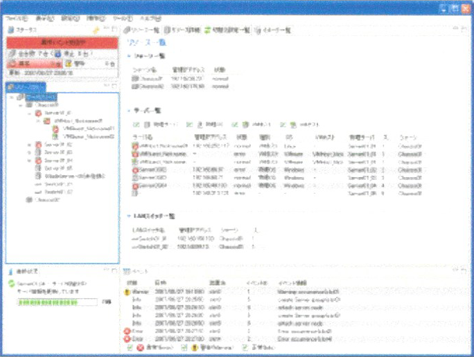
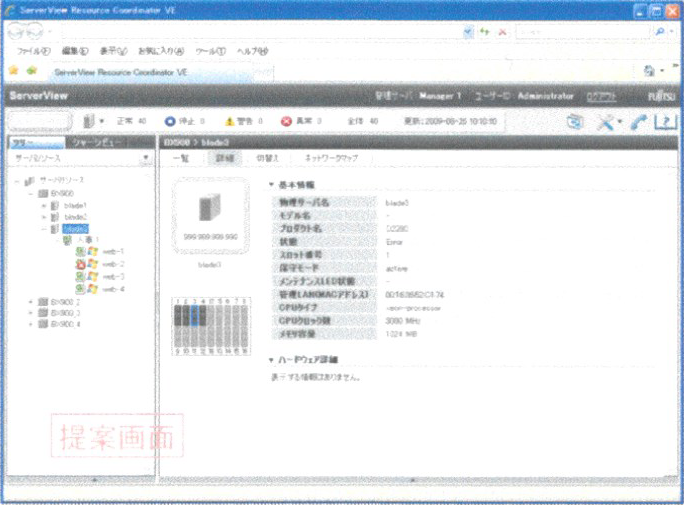
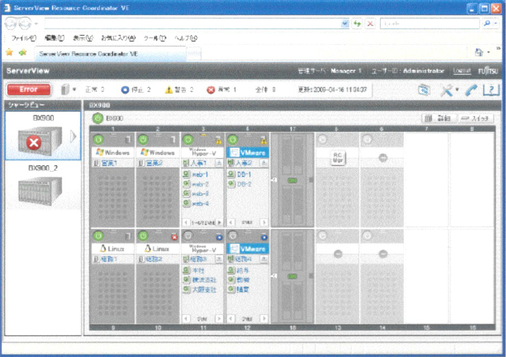
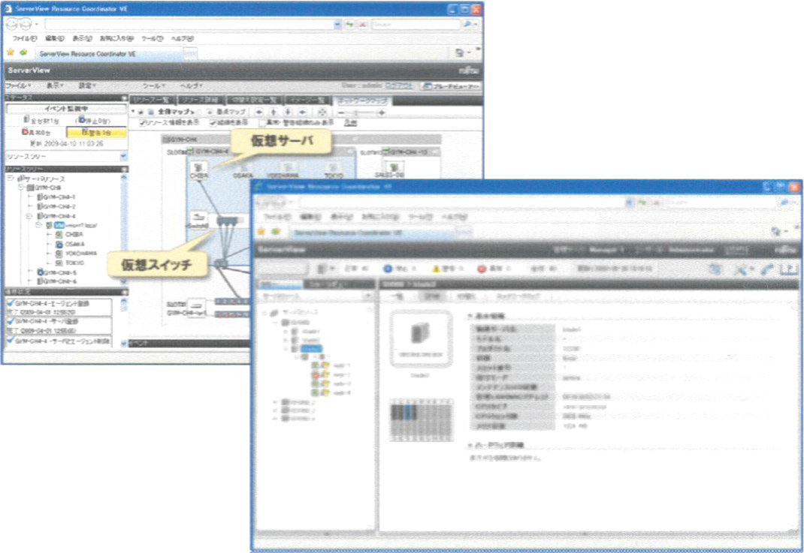
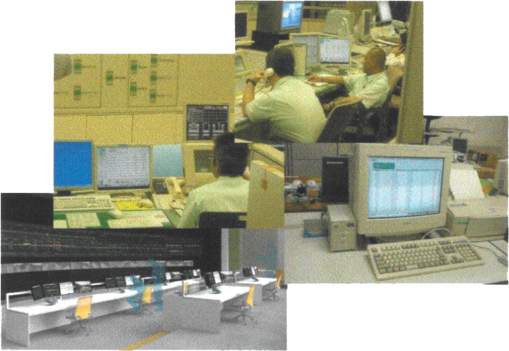
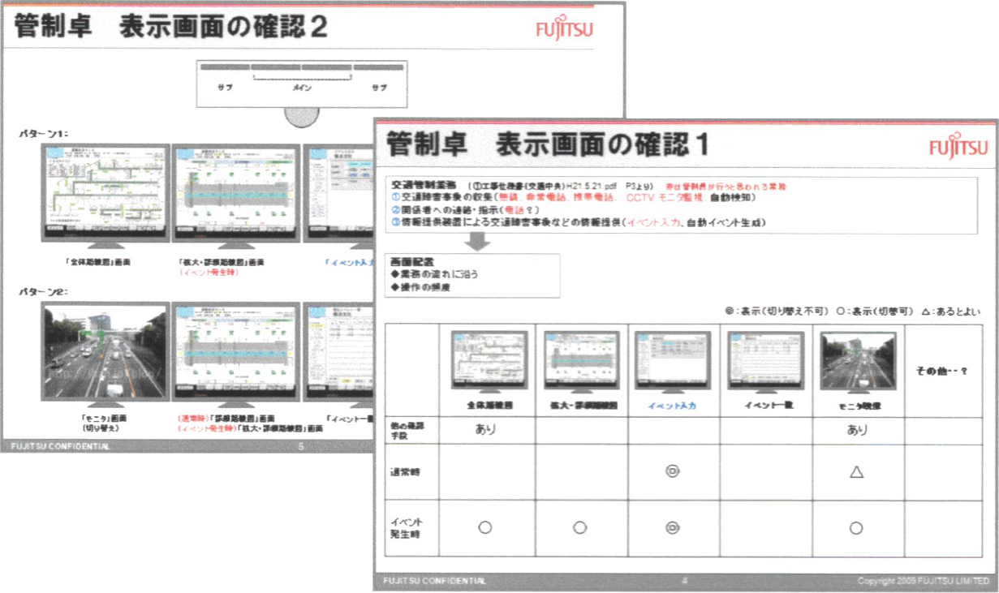
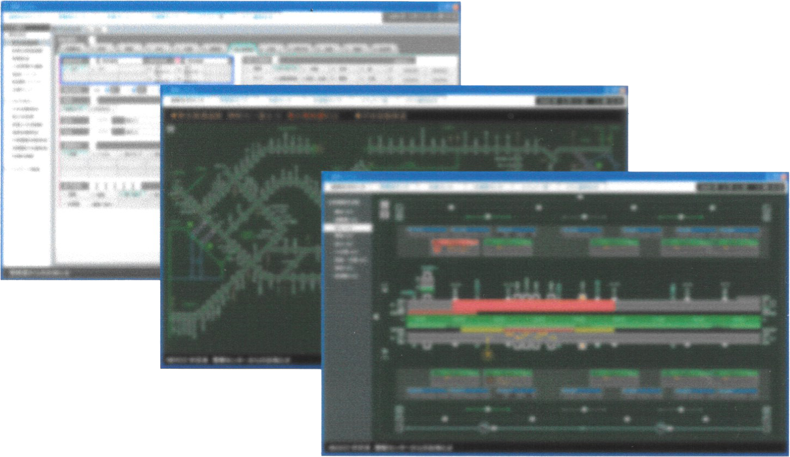
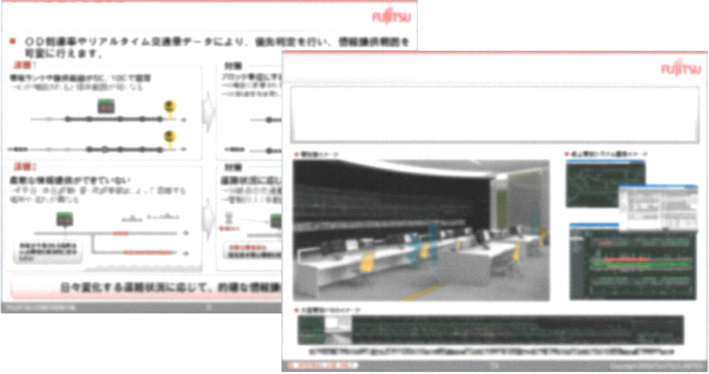

Works
JustSystems
1on1インタビューサービス
Sprint
販促Webサイトのデザイン、ディレクションを実施
掲載するイラストは内容が伝わる見せ方に近づけるため何度もレビューを重ねた

限られた時間内でサービスの特徴やメリットを表現するのに苦労したが、
伝えたい内容をまとめ、目標とする１分に近づかることができた
販促Webや営業時の資料として活用された
１分でわかるSprint


JustSystems
転職サービス
ピタジョブ
転職サイトや企業サイトから集めた20,000件以上の求人情報から、こだわり条件にピッタリな転職先を分かりやすく・カンタンに探せる転職サイト
求職者向けサイトと企業向けサイトの２サイトあり、求職者サイトの改善担当を１年担当。プロジェクトの目標である採用率アップに向け、UIやフローの改善を進めた
メルマガからのサイト流入増を目指す為「件名」と「メルマガデザイン」、特にユーザーが多いスマホのFirstViewの調整を実施。結果、開封率・クリック率ともアップし、メール流入からの応募率が１番高くなる時期もあった


転職活動中に行うやりとりや流れを「求職者」「採用担当者」の各視点で表現し先の見通しを立てやすくなるようにしたり、お祝い金を受け取る為の複雑な条件をイラストで表したりポイントを強調し、ユーザーが行動に移しやすくする為の工夫を施した


- 期間
- 2015年12月〜2016年11月
- フェーズ
- 改善リリース後, 運用
- 担当
-
-
求職者向けメルマガ
HTMLデザイン/コーディング
メールシステムを使ったテスト/配信, A/Bテスト
-
求職者サイト
新規ページデザイン
UI改善, A/Bテスト
-
- ポイント
- ・メルマガ改善によるCVRアップ
・アクセス分析を元にしたUI改善
・A/Bテストによる効果測定
・ユーザーにとって見通しが立てやすくなる図やイラスト - URL
- ピタジョブ
JustSystems
ジャストシステム直営ECサイト
Just MyShop
ログイン関連のフォーム画面やエラー画面など約40画面をレスポンシブWEBで制作。 短かいスケジュールだった為、画面やパーツのテンプレートを先に作成し、それをメンバーに使ってもらう事で効率的に構築できた。
- 期間
- 2017年1月〜2017年7月
- フェーズ
- 改善
- 業務概要
- JustMyShop ログイン画面/フロー 改善
- 担当
- フロントエンドコーディング
- ポイント
- ログイン機能刷新により会員登録/ログイン関連の全40画面のコーディングを実施。短期間スケジュールの中、複数人のフロントエンド担当をとりまとめ、リリースに間に合わせた
JustSystems
家庭用タブレット教育サービス
スマイルゼミ みまもるねっと
スマイルゼミ小学生講座のサービスの一つ、学習結果が確認できる保護者向けサイト「みまもるねっと」立ち上げ時のUI設計,フロントエンド構築を担当
日々の学習結果、教科毎の成績など見たい情報がすぐ見つけられるよう注力した


- 期間
- 2012年04月〜2013年07月
- フェーズ
- 新規 企画〜設計〜実装〜リリース〜運用改善
- 担当
- UI設計、フロントエンドコーディング
- ポイント
- 保護者が見たい情報をすぐにわかりやすく確認できるようなレイアウト、アイコン、グラフを検討
- URL
- 「みまもるねっと」の紹介ページ
Fujitsu Design
サーバ監視ソフトウェア
ServerView ResourceCoordinator
- 
- 
- 
- 
- 製品概要
- サーバー監視ソフトウェアのUI改善。
Ver13.2まではWindowsアプリケーションだったがWeb化に伴いUIを根本から刷新。 - 期間
フェーズ -
-
Ver13
2006年10月〜2007年09月
UI改善
-
Ver13.2
2007年10月〜2008年09月
UI改善
-
VE
2008年10月〜2009年09月
現場調査/インタビュー, UI設計
-
- メンバー
- ディレクター1名
デザイナー2名 - ポイント
- 現場調査等を踏まえ開発チームと仕様検討段階から関わりUI設計に取り組み、直感的に操作できるようグラフィカルな表現を実現した。
VEは2009年度GoodDesign賞受賞 - URL
- 製品ページ
Fujitsu Design
医事会計システム
HOPE SX/R


{kind=link}
{kind=link}
{kind=link}
- 製品概要
- 医療事務作業を効率化し、事務スタッフの業務負荷軽減を実現するシステム
- 期間
- 2010年04月〜2010年10月
- フェーズ
- 改善 VerUPに伴うUI大幅改善 設計〜実装
- メンバー
- ディレクター1名、チーフデザイナー1名、デザイナー3名
- ポイント
- 長い間継承されている医療システム特有の操作方法を踏襲しつつ、現在一般的となっているキーボードとマウスを使った操作方法を反映し、熟練のユーザと一般的なPC操作に慣れたユーザの両方に対応できるUIを検討した
Fujitsu Design
【商談支援】
交通管制システム
- 
- 
- 
- 
- 概要
- 商談支援
高速道路の交通管制システム - 期間
- 2009年09月〜2010年03月
- フェーズ
- プレ商談の提案検討
- メンバー
- ディレクター1名
チーフデザイナー1名
デザイナー3名 - 担当
- デザイナーとして、管制室の卓上システム画面UIデザインを担当
- ポイント
- 実際のお客様の現場観察により業務と人の流れを把握した上でUI設計/提案